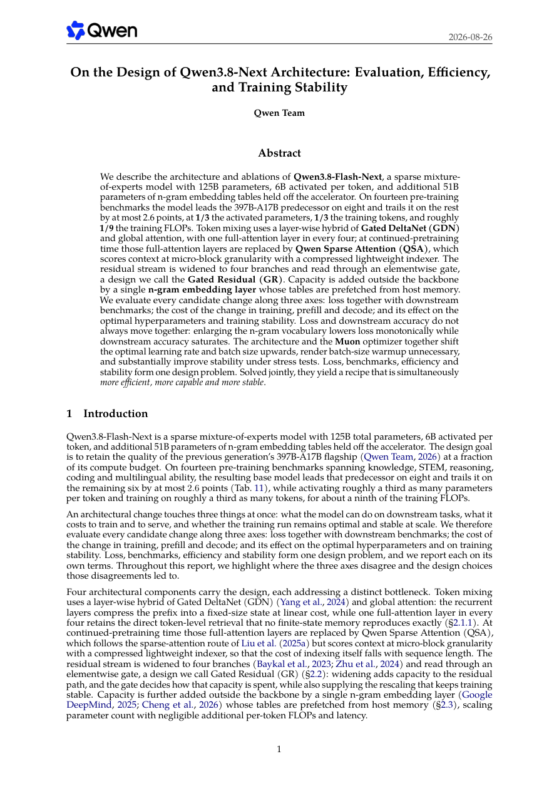
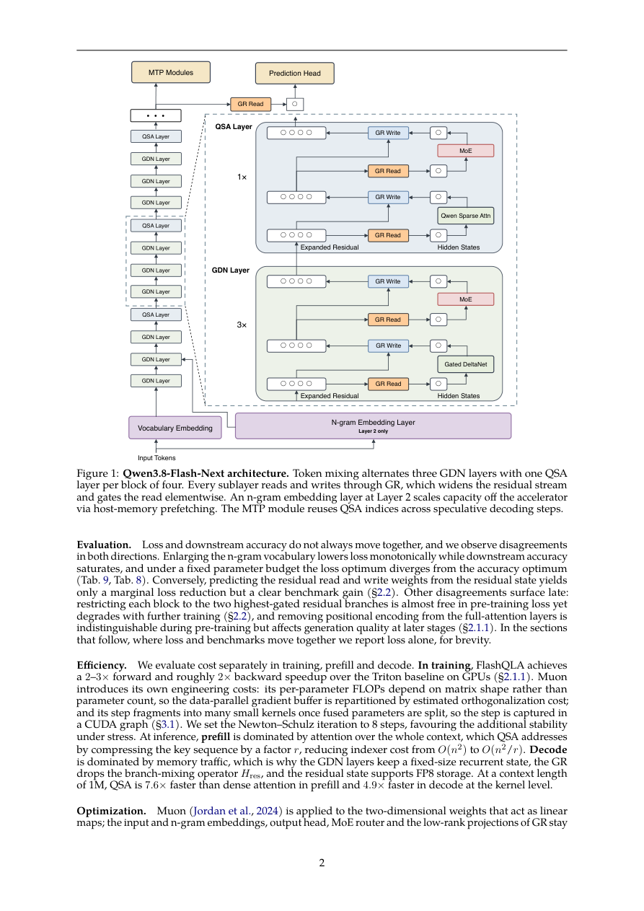
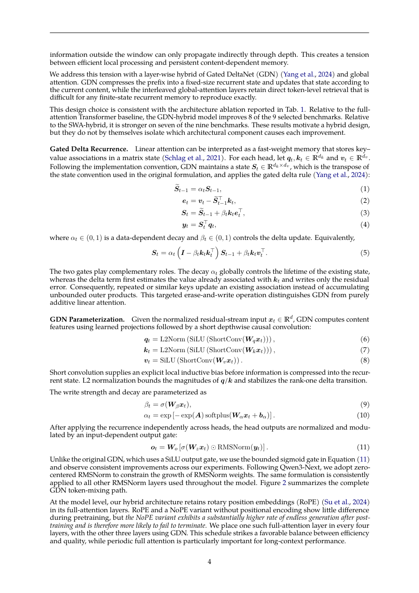
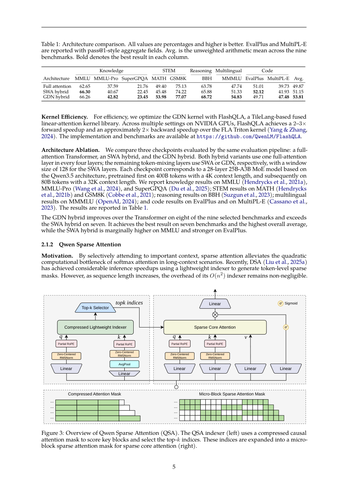

先给结论：这是一份“联合优化”报告
保留大容量，控制每 token 计算。
每四层中三层 GDN、一层全局/稀疏 attention。
1M 上下文下相较 dense attention 的报告结果。
四个组件分别解决四种瓶颈

技术报告 Figure 1：Qwen3.8-Flash-Next 总体架构。原图来自 Qwen 官方技术报告。
GDN 以固定大小状态线性压缩 prefix；QSA 保留稀疏的全局内容检索。
Gated Residual 将 residual stream 扩展为四个 branch，再用 elementwise gate 决定如何读取。
单独的 n-gram embedding 表放在 host memory，通过预取增加容量而不显著增加每 token FLOPs。
Muon、重新拟合 scaling law 和稳定性设计共同改变训练的最优 batch size 与 learning rate。
阅读顺序应该是：先看“信息如何流动”，再看“参数放在哪里”，最后看“这些选择如何改变训练和 serving 成本”。
三层 Gated DeltaNet，加一层直接全局检索
全 attention 能精确访问历史 token，但计算和 KV cache 随上下文增长；纯 sliding-window attention 又会让窗口外的信息只能间接传播。Qwen 的折中是：用 Gated DeltaNet 把 prefix 写入固定大小的内容相关状态，再周期性插入全局层保留直接 token-level retrieval。

技术报告 Figure 2：Gated DeltaNet 的 query/key/value 投影、短因果卷积、门控 delta recurrence 与输出 gate。
GDN 的两个门承担不同职责：decay gate α 控制旧状态的生命周期，write gate β 控制 delta 写入强度。它不是简单地把新的 key-value 继续累加，而是先估计当前 key 已经关联的 value，再只写入残差误差，因此更像一个会遗忘、会修正的内容记忆。
QSA 把“找重要上下文”从 token 级改成 micro-block 级
QSA 不是盲目减少 attention 的 token 数，而是先用轻量 indexer 对压缩后的 micro-block 打分，再选择 top-k block 展开为稀疏 attention mask。这样 indexer 的序列长度也被压缩，避免稀疏 attention 自己成为新的 O(n²) 瓶颈。

技术报告 Figure 3：压缩轻量 indexer 先选 block，再展开为 micro-block sparse attention mask。
每 r 个 key 做 average pooling，报告中的实现使用 r=4。
4 个 query head、1 个共享 key head，估计 block 重要性。
top-k block 展开为 token 集合，并保留最后不完整 block。
训练分两阶段：先用 dense attention 的分布蒸馏 indexer，再在 sparse attention 下联合训练 backbone 与 indexer。实现中 token budget K=2048、压缩比 r=4，即每个 query 最多选择 512 个完整 block。
把 residual stream 扩宽，再让模型决定用多少
Gated Residual（GR）将 residual stream 扩展为四个 branch，每个 sublayer 都通过 GR write 写入、GR read 读取，并用 elementwise gate 调节各 branch 的贡献。它增加了 residual path 的容量，同时提供了缩放机制，帮助模型在更高 learning rate 下保持稳定。

报告中的架构细节页：GR 与 token mixing、MoE、QSA 层共同组成主干。
报告特别强调，loss 与 downstream accuracy 并不总是同步：让 gate 权重由 residual state 预测，loss 只小幅改善，却带来清晰的 benchmark 增益；限制每个 block 只使用两个最高 gate branch，预训练 loss 看起来几乎不变，但继续训练后能力会下降。
把容量放到加速器之外：便宜地增加记忆
Qwen3.8-Flash-Next 额外加入 51B 参数的 n-gram embedding tables，但这些表不常驻 accelerator，而是从 host memory 预取。它的思路是用更大的离散记忆容量改善 token 表示，同时让每 token 的计算和延迟增量尽可能小。
局部短模式、词组和常见片段可以通过 n-gram 表快速提供额外信息，主干网络不必承担全部记忆任务。
扩大 n-gram vocabulary 会单调降低 loss，但 downstream accuracy 会饱和；参数规模不是无限有效。
这是典型的“参数—计算解耦”：参数可以增长，但只有真正参与当前 token 的部分才应该占用昂贵的 accelerator 计算和显存。
Muon 和新架构一起改变了训练配方
报告没有把 optimizer 当作独立组件。Muon 用于二维线性映射权重，embedding、output head、MoE router 和 GR 的低秩投影继续使用 AdamW。由于 Muon 的成本取决于矩阵形状而不只是参数量，训练系统需要按估算的正交化成本重新分配 data-parallel gradient buffer，并用 CUDA graph 覆盖碎片化的 optimizer step。
报告选择更多迭代以换取压力测试下的稳定性。
从小 batch ramp 到目标 batch 反而增加 optimizer steps。
报告称最终大规模训练未出现异常 spike。
在 4× optimal learning rate 的压力测试中，新 recipe 比上一代结构更稳定。这个结果说明训练稳定性不是上线前的补丁，而是架构、归一化、gate、optimizer 和 scaling law 的共同产物。
如何把这份报告转化成 AI Infra 判断
| 报告选择 | 直接收益 | 新增系统工作 |
|---|---|---|
| GDN 混合 token mixing | 固定状态、低 decode 成本 | 维护 recurrent state 与周期性全局层 |
| QSA micro-block indexer | 降低长上下文 prefill | 蒸馏 indexer、维护 top-k mask、融合 sparse kernel |
| Gated Residual | 增加 residual 容量、扩大稳定性边界 | 多 branch 读写和 gate 相关内存访问 |
| Host n-gram embedding | 低 FLOPs 增加容量 | 预取、主机带宽和 accelerator 同步 |
| Muon + scaling law | 更高吞吐、更大 LR、更稳训练 | 矩阵形状感知的并行与 optimizer 工程 |